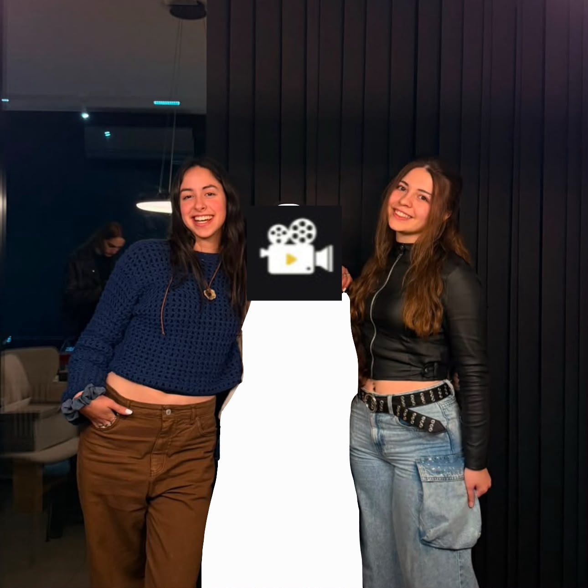

JULI Y JOSE :D
Nos gusta ver películas!
Películas favoritas
Favoritas seleccionadas: 0 / 3
Pendientes
Las películas cargadas que aún no marcaste como vistas:
Stats
| Métrica | Valor |
|---|---|
| Películas vistas | 0 |
| Pendientes | 0 |
| Nota media | - / 10 |
| Género más visto | N/A |